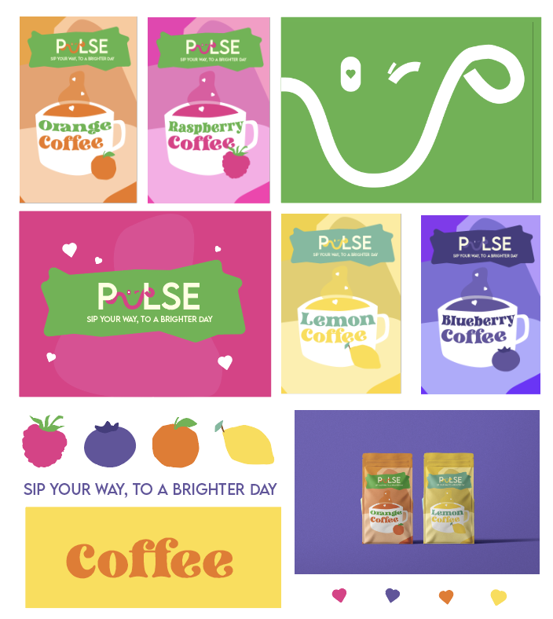

EXPRIMER
Marque de café Pulse

Ce projet a été réalisé au semestre 3 dans le cadre d’un travail individuel de création de marque. L’objectif était de concevoir une identité complète pour une marque de café aromatisé appelée Pulse, en définissant son univers graphique ainsi que ses supports visuels.
J’ai imaginé une marque proposant des saveurs fruitées comme le citron, la framboise, la myrtille ou encore l’orange, avec une direction artistique basée sur une expérience positive et dynamique. J’ai réalisé le logo, la charte graphique ainsi que le design du packaging du café, en utilisant Illustrator et Figma pour structurer l’ensemble.
La principale difficulté a été la phase de recherche et d’inspiration, car il m’a fallu plusieurs essais avant de trouver une direction visuelle cohérente. J’ai donc exploré différentes pistes graphiques avant d’aboutir à une identité stable et exploitable. Avec du recul, ce travail m’a permis de mieux comprendre la construction d’une ide
AC 33.02 : Concevoir un design system et en produire les éléments visuels.